April 24 – May 3
👥 Yanni · Jason · Susan · Jo
📅 Day by Day
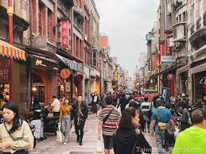
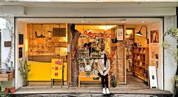
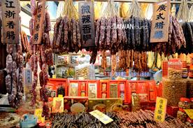
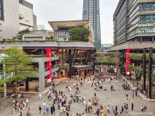
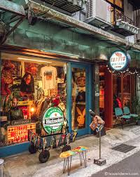
👥 Yanni · Jason · Susan · Jo
📅 Day by Day
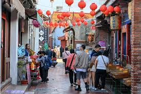
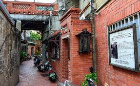
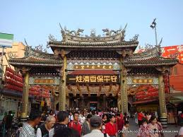
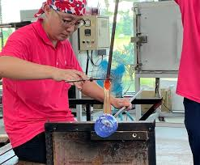
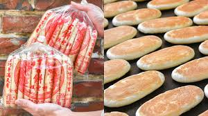
👥 Yanni · Jason · Susan · Jo
📅 Day by Day
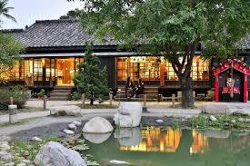
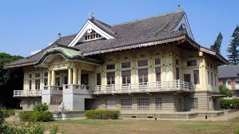
Taichung is only ~20–30 min from Lukang by taxi — making it a natural swap for Chiayi. Great if you prefer a bigger, trendier city with famous ice cream, night markets and modern architecture.
📅 Suggested Day Plan
📍 56 Chun'an Rd, Nantun District · Free · ⏰ Open daily
An 80-year-old veteran painted every surface of this tiny village to save it from demolition. Very photogenic.
📍 Yingcai Rd area, West District
1.6km green corridor lined with cafes, bookshops and boutiques. Great for a stroll.
📍 Wenhua Rd, Xitun District · ⏰ 4pm–1am
Enormous night market near Feng Chia University. Great variety of street food and shopping.
📍 101 Huilai Rd Sec 2, Xitun District
Designed by Toyo Ito — one of the most architecturally striking buildings in Taiwan. Worth seeing even from outside.
📅 Day by Day
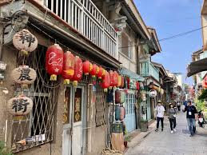
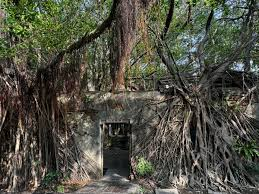
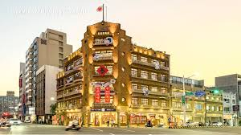
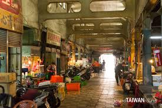
📅 Day by Day
Get one at any MRT station — works on MRT, buses & YouBike everywhere.
Taipei → Changhua → Chiayi → Tainan. Book in advance at thsrc.com.tw
Public bike share — perfect for flat streets in Tainan & Taipei.
Late April–May: 24–30°C, humid, occasional rain. Light clothes + small umbrella.
Cash is king at night markets, street food, taxis and small local restaurants. ATMs are everywhere — 7-Eleven ATMs accept foreign cards. Cards work at hotels, HSR machines & bigger stores.
Convenience stores are everywhere and genuinely amazing in Taiwan. Use them!
Light breathable fabrics — linen, cotton, moisture-wicking. It's hot and humid so avoid heavy denim or thick layers. Comfortable walking shoes are a must for cobblestone old streets.
~7 tops, 3–4 bottoms, 1 light cardigan or jacket (for heavily air-conditioned restaurants & HSR), 2 pairs of shoes (walking + casual), a small crossbody bag for daily outings, and a foldable tote for shopping hauls.
Sunscreen is essential — UV is intense even on cloudy days. Pack a compact umbrella (doubles as a parasol). A facial mist spray or small cooling towel is a game changer in the heat.